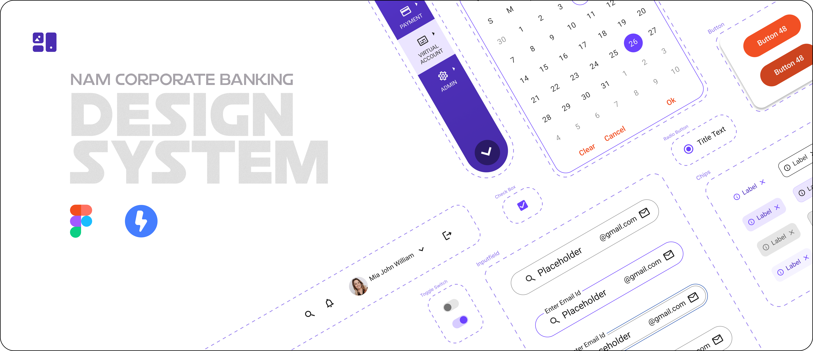
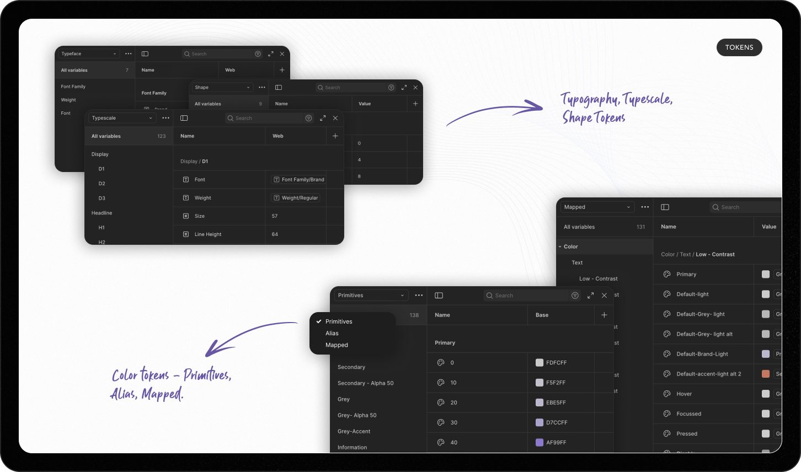
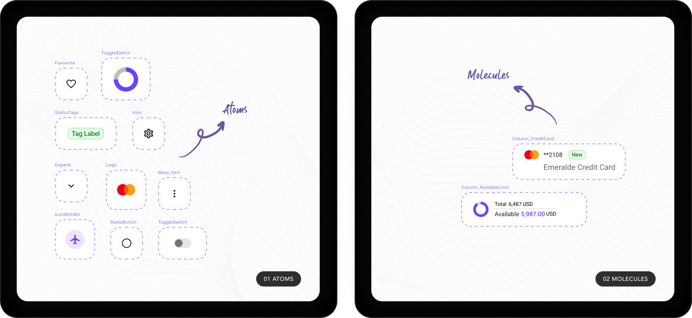
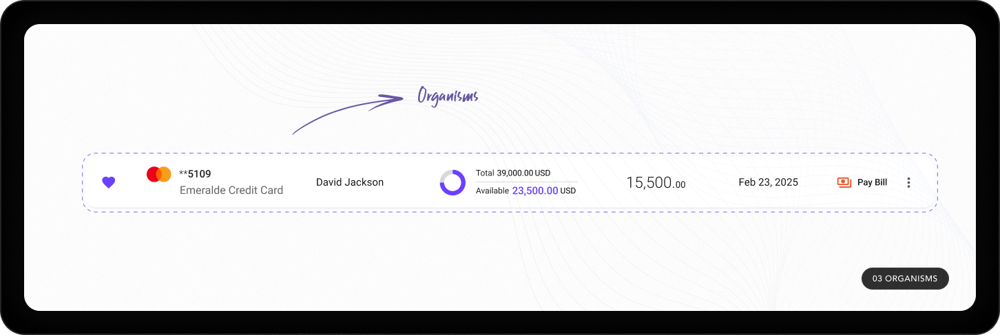
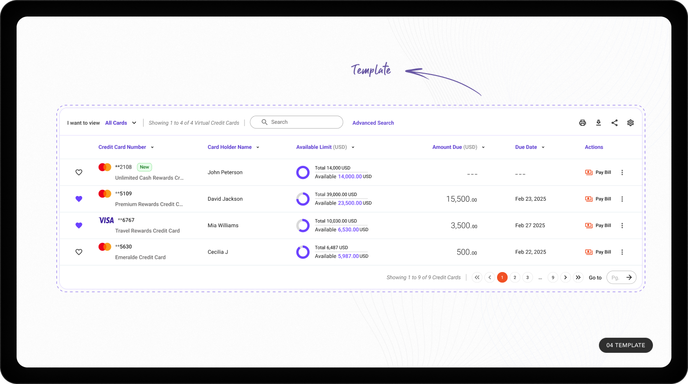
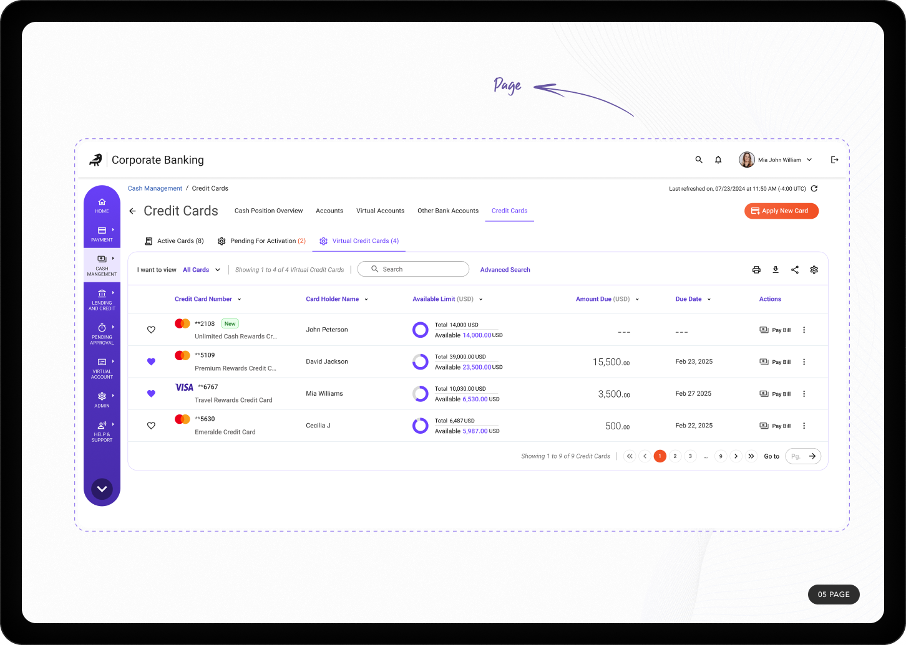
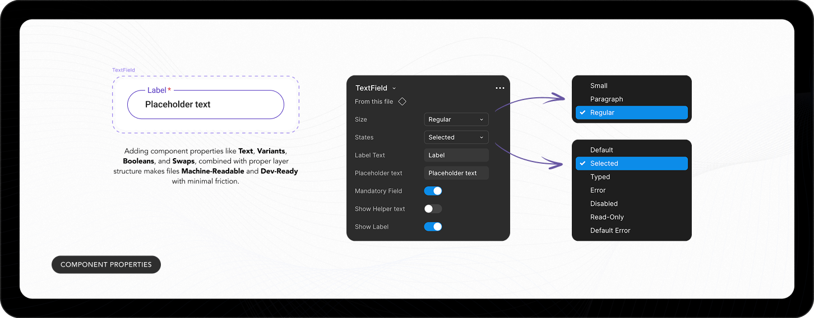
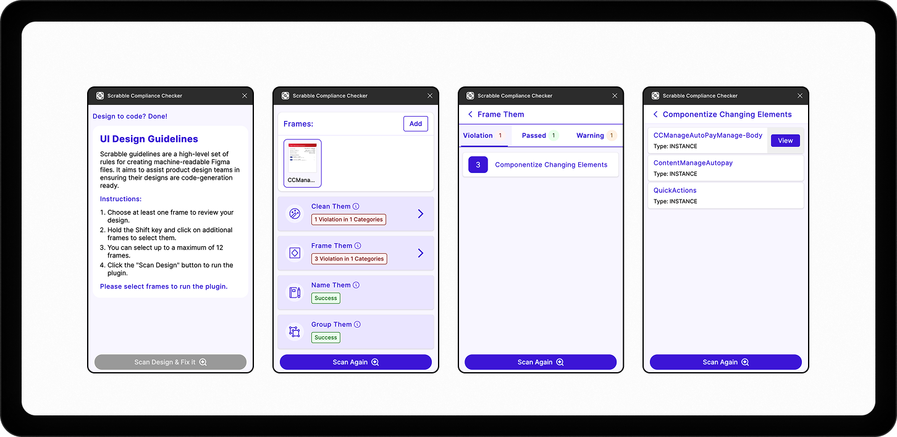

Design system from figma to code - Zero drift with locofy AI
A next-gen, machine-readable design system engineered and optimised for component-level code generation using Locofy AI.

AI4UI & Inspiro in one minute
Slow to ship, hard to keep consistent
Banking UI takes so long to go from concept to launch that products risk being outdated on day one. Underneath, every team designed in isolation: components were duplicated and unstructured, machines couldn’t read or reuse them, white-labelling was reinvented for each client, and naming and documentation were inconsistent.
A white-label design system machines can read
A modular, token-driven system of 80+ components built on semantic tokens, strict naming and a layered atomic architecture. It became the single source of truth for design and code, used across product teams and backed by PMs and engineering.
UX Designer
I led machine-readable design standards for AI4UI and architected Inspiro from the ground up.
Welcome to the future of design systems
A scalable interface architecture, engineered to code itself.
AI4UI is a code generation framework that bridges the gap between design and deployment by making UI development automated and scalable. Inspiro is the custom UX design language built to unlock it, ensuring designs are machine-readable and code-generation ready.
What started as a proof of concept evolved into one of the most ambitious transformations at NAM Corporate Banking: a white-label-ready platform that can be rebranded, scaled and shipped across multiple banks, with component-level code generation using Locofy AI.
This case study explores how AI4UI and Inspiro transform UX workflows, accelerate deployment and redefine design-to-development efficiency.
This wasn’t just about building a library of components. It was about:
Establishing a token-first, atomic design architecture
Creating a system that could be rapidly rebranded
Building a machine-readable system with optimised Figma layer structures for component-level code generation using Locofy AI
Bridging design-to-dev handoff with zero visual or structural drift
Slow to ship, fragmented by design
Banking UX has two problems that feed each other. The path from concept to deployment is far too long, and the design foundation underneath it was too fragmented to speed up.
1. The time-to-market dilemma
- 1Designing UI screens takes ~6 months.
- 2Development and implementation take ~6 months to 1 year.
- 3By the time the product is live, it is already outdated.
Banking and fintech evolve rapidly and customer expectations shift. Design and development run one after the other, so every month spent hand-building screens and then hand-coding them is a month the market keeps moving.
2. Why it could not get faster: fragmented systems, fractured experiences
As the product scaled across teams and features, and toward a white-label future, the lack of a unified design foundation surfaced deeper systemic issues. The audit crystallised four critical gaps.
No shared mental model
Each team approached design in isolation.
No structural logic
Components weren’t built for machines or reuse.
No foundation for theming
White-labelling was reinvented for each client.
No governance framework
Naming, structure and documentation were left inconsistent.
Together: long hand-off cycles made products outdated at launch, and the absence of a shared, machine-readable foundation meant those cycles could not be shortened.
How did we begin?
Before touching a single component, I zoomed out to understand how design was actually being done across the platform. What I uncovered wasn’t just inconsistency. It was entropy.
1Cross-team UX audit
A comprehensive UI audit across tracks and modules, comparing:
- Button styles, input fields, table patterns and modals
- Layout spacing, colour usage and typography hierarchy
- Figma file structure, component grouping and layer naming
2Developer feedback & Locofy evaluation
Partnered with front-end developers and ran existing Figma files through Locofy AI:
- Components failed to render due to improper grouping and nesting
- Non-uniform naming made mapping to code unpredictable
- Lack of structure created manual overhead during conversion
3Stakeholder workshops
To bridge silos, I ran mini-discovery sessions with:
- Designers across tracks
- Product owners with client-specific branding needs
- Developers facing delays in design-to-code implementation
What emerged was a fragmented ecosystem
Reduce time to market with a system that code can understand
Reduce time to market by leveraging AI-driven code generation, and close the four gaps behind the delay by building a modular, machine-readable design system that makes UI development automated and scalable.
One unified design language
A single source of truth that every team designs from, so inconsistency and duplication stop at the root.
Development-ready, machine-readable components
Every component is structured for reuse and code generation, removing handoff friction so UI is generated instead of hand-coded.
Built for white-labelling
Token-first, alias-driven theming with light and dark modes, so rebranding for a new client does not mean rebuilding components.
Governed naming and structure
Strict naming, a layered architecture and consistent documentation keep the system dependable as it scales.
A design system or a code engine? Why not both?
The audit became the foundation for the strategy: a modular, machine-readable system that scales across teams, breaks silos, and serves designers and developers with equal efficiency.
Token-first architecture
FoundationWe embraced a token-first approach to bake in flexibility and future-proofing. All theming, spacing, typography and UI logic originate from tokens, so dark/light mode, client customisations and brand adaptations never require changing component logic.
Multi-tier token architecture
- Core tokens: raw values (colour, spacing, typography)
- Semantic tokens: intent-driven mappings like
primary-action,error-bg,label-text - Alias tokens: enable seamless theming across multiple brands and UIs

Atomic & layered architecture
StructureWe scaled Atomic Design into a four-layered architecture, from tokens to templates, enabling modularity, predictability and ease of maintenance.
Four-layer structure
- Foundation: tokens, grids, breakpoints
- Components: universal UI atoms and molecules
- Patterns: functional flows (e.g. tables with filters)
- Templates: page-level scaffolds




Machine-readable by design
Code generationEvery component was built to be machine-readable, not just pixel-perfect. We structured our Figma files to align with DOM semantics, making them directly usable by Locofy AI and minimising engineering interpretation.
Our machine-ready standards
- Consistent naming for layers and variants
- Strict use of auto-layout
- Clean hierarchy with logical component nesting
- No hardcoded values, only tokens and semantic styles
How the entire process works
From a governed Figma file to generated code, and back again.
Figma → Locofy → AI4UI
Atoms, Molecules, Patterns, Templates. The designs live here, and they need to follow the Inspiro guidelines before moving on.
From design thinking to design doing
Design Thinking to Design Doing Model
Hover or tap a node, or pick a world on the left.
What are the Guidelines
In a nutshell, Clean them, Frame them, Name them and Group them.
Follow strict naming conventions
Naming creates clarity to interpret. Deconstruct your components, micropatterns, or patterns into their atomic elements. Organize and label these elements correctly within the layers panel. Effective layer naming significantly aids code generation.
- dynamic-Tag-detail
- static-payment-type
- dynamic-Account-name
- dynamic-Account-number
- dynamic-account-balance
- input-amount
- action-pay-now
static-Remains unchanged within the UI.
dynamic-Updates based on backend data. Also used for all helper text that comes beneath an input or dropdown field.
input-Modifies the text in response to user interaction.
action-Responds to user actions like clicks or drags. Use for all text elements the user can interact with.
The input- and action- layers above are added to illustrate their rules; the Account name, number, balance, tag and payment type layers follow the original example.

Plugin-driven compliance checks
AutomationTo operationalise the system and reduce human error, we developed a custom internal Figma plugin that audits tokens, layers and structure compliance in real time.
Plugin capabilities
- Scan for improper token usage (e.g. hardcoded values)
- Flag inconsistent auto-layout and frame usage
- Enforce proper naming conventions
- Highlight missing semantic tokens in components
- Score components against “code-generation readiness”

Single source of truth
GovernanceFragmentation across tracks led to duplicated components, mismatched patterns and inconsistent visuals. We fixed this with a centralised, governed Figma library and standardised documentation.
System-wide standards and rituals
- Component version tagging
- Usage guidelines for new designers
- Regular design system hours and an RFC process
This strategy didn’t just organise the design system, it made it intelligent, composable, and development-ready. Every decision reinforced scale, clarity and code-friendliness.
Beyond screens, did the system truly scale?
This wasn’t just a design system launch. It was a shift in how teams thought, built and shipped. The impact was measured not only in tokens and components, but in velocity, trust, and seamless collaboration between design and engineering.
The system became more than a library of components. It became a new language of collaboration, one that accelerated delivery, reduced chaos, and made scaling across markets not just possible, but effortless.
Key learnings
Code-ready components improved handoff
By structuring components to be machine-readable, design-to-dev drift fell to near zero, turning handoff from a bottleneck into a seamless workflow.
Token-first architecture accelerated theming
Multi-layer tokens (core, semantic, alias) let us rebrand entire platforms in hours, not weeks, directly improving delivery timelines.
Governance made reuse the default
Centralised libraries with version control eliminated duplicate work, so designers spent time building new patterns, not remaking old ones.
Automation reinforced quality
The custom Figma plugin acted as a design linter, catching token misuse and structural inconsistencies early and raising system quality without adding review overhead.